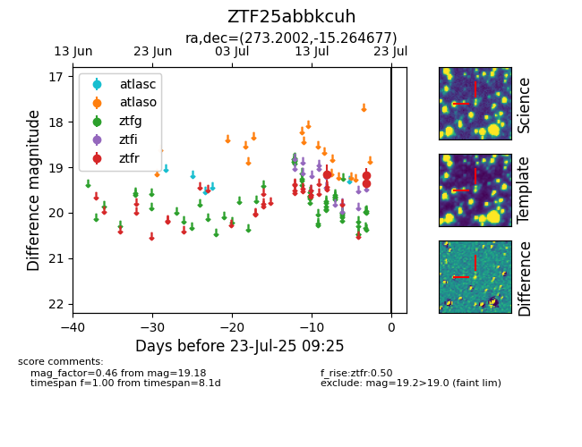

Target ZTF25abbkcuh at 2025-07-23 11:52, see:
FINK: fink-portal.org/ZTF25abbkcuh
Lasair: lasair-ztf.lsst.ac.uk/objects/ZTF25abbkcuh
ALeRCE: alerce.online/object/ZTF25abbkcuh
alt names
ZTF25abbkcuh (ztf,fink)
coordinates:
equatorial (ra, dec) = (273.2002,-15.26468)
galactic (l, b) = (14.9804,+1.37584)
photometry
last ztfr=19.18
3 ztfr detections
